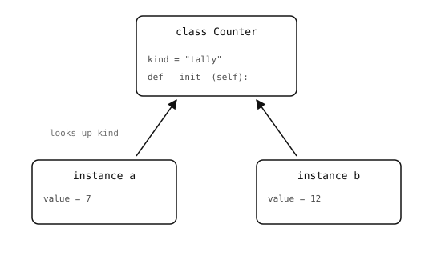

2.21. التوابع والسمات¶
إن التابع هو دالة مُعرَّفة داخل صنف. والوسيط الأول هو النسخة التي يُستدعى عليها التابع؛ والعرف هو تسميته self.
2.21.1. توابع النسخة¶
class Point:
def __init__(self, x, y):
self.x = x
self.y = y
def magnitude(self):
return (self.x ** 2 + self.y ** 2) ** 0.5
p = Point(3, 4)
print(p.magnitude())
المخرجات:
5.0
يمرّر النداء p.magnitude() كائن p كـ self تلقائياً. وتقرأ أجسام التوابع السمات وتحدّثها عبر self بالطريقة نفسها التي تقرأ بها الدوال الأسماء وتحدّثها عبر الوسائط.
2.21.2. سمات النسخة مقابل سمات الصنف¶
إن السمات المُسنَدة إلى self -- عادةً داخل __init__ -- تنتمي إلى تلك النسخة الواحدة:
a = Point(1, 2)
b = Point(10, 20)
a.x = 99
print(a.x, b.x) # 99 10
إن a.x و b.x تخزينان مختلفان؛ وتعديل أحدهما لا يؤثر في الآخر.
أما الأسماء المُسنَدة في جسم الصنف، خارج أي تابع، فتتشاركها كل نسخة من الصنف:
class Counter:
kind = "tally" # class attribute -- shared
def __init__(self):
self.value = 0 # instance attribute -- per instance
a = Counter()
b = Counter()
print(a.kind, b.kind) # tally tally

تقيم سمات الصنف على الصنف نفسه وتكون مشتركة. أما سمات النسخة فتقيم على كل نسخة.¶
يُوصَل إلى سمة الصنف بالطريقة نفسها لسمة النسخة (a.kind)؛ إذ يبحث Python أولاً على النسخة، ثم على الصنف. والإسناد إلى a.kind سينشئ سمة نسخة جديدة تحجب سمة الصنف، تاركاً b.kind دون مساس.
استخدم سمات الصنف للثوابت والقيم الافتراضية التي ينبغي أن تراها كل نسخة بالطريقة نفسها. واستخدم سمات النسخة للحالة التي ينبغي أن يملك كل كائن نسخته الخاصة منها.
2.21.3. __str__ و __repr__¶
يتحكم تابعان خاصان في كيفية طباعة النسخة. يعيد __str__ السلسلة "الودية" التي تستخدمها print()؛ ويعيد __repr__ السلسلة "الخاصة بالمطوّر" المستخدمة في REPL وداخل عروض الحاويات:
class Point:
def __init__(self, x, y):
self.x = x
self.y = y
def __str__(self):
return "(" + str(self.x) + ", " + str(self.y) + ")"
def __repr__(self):
return "Point(" + str(self.x) + ", " + str(self.y) + ")"
p = Point(3, 4)
print(p) # uses __str__
print([p, p]) # uses __repr__ inside the list
المخرجات:
(3, 4)
[Point(3, 4), Point(3, 4)]
إذا عُرّف __repr__ فقط، فإن print() تلجأ إليه -- لذا فإن __repr__ واحداً مكتوباً جيداً يكون عادةً كافياً. عرّف __str__ أيضاً فقط عندما ينبغي أن تبدو الصيغة الودية مختلفة عن صيغة المطوّر. اسعَ إلى __repr__ يبدو كالنداء الذي قد يعيد إنشاء الكائن؛ إذ يصبح التنقيح أسهل بشكل كبير عندما تكون القيم المطبوعة لا لبس فيها.